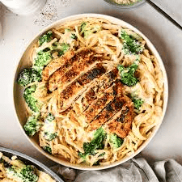
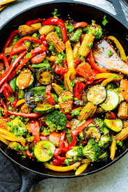
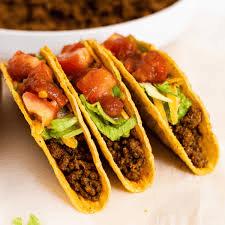

Spaghetti Carbonara

Jump to Ingredients | Jump to Steps
Description
Classic Italian pasta dish made with eggs, cheese, pancetta, and pepper. The cheese used is usually pecorino romano.Carbonara is a pasta dish made with fatty cured pork, hard cheese, eggs, salt, and black pepper. It is typical of the Lazio region of Italy. The dish took its modern form and name in the middle of the 20th century. The cheese used is usually pecorino romano.
Ingredients
- Eggs
- Cheese (pecorino romano)
- Pancetta
- Black pepper
Steps
- Cook spaghetti in salted water until al dente.
- Meanwhile, cook pancetta in a pan until crispy.
- Whisk eggs and cheese in a bowl.
- Combine hot pasta with pancetta and egg mixture.
- Serve immediately with black pepper.
Chicken Alfredo
Jump to Ingredients | Jump to Steps
DESCRIPTION
A creamy pasta dish made with chicken, Alfredo sauce, and fettuccine noodles. Fettuccine Alfredo is a pasta dish consisting of fettuccine tossed with butter and Parmesan cheese which is melted and emulsified to form a rich cheese sauce coating the pasta. Originating in Rome in the early 20th century, the recipe is now known primarily in the United States and other countries.
Ingredients
- Chicken breast
- Alfredo sauce
- Fettuccine noodles
- Butter
- Parmesan cheese
Steps
- Cook fettuccine in salted water until al dente.
- Meanwhile, cook chicken in a pan until fully cooked.
- Melt butter in a separate pan and add Alfredo sauce.
- Combine cooked chicken and sauce with pasta.
- Serve immediately with Parmesan cheese.
Vegetable Stir-Fry
Jump to Ingredients | Jump to Steps
DESCRIPTION
A quick and healthy dish made with a variety of vegetables and a savory stir-fry sauce. A stir fry is a great option when you’re in the mood for Asian food but don’t want to order takeout, and I have found this to be an easy way to get my kids to eat more veggies! Whenever I have vegetables I need to use, I love to throw in whatever I have leftover for a filling and nutritious dish, served over steamy white rice.
Ingredients
- Vegetables (broccoli, carrots, bell peppers)
- Soy sauce
- Garlic
- Ginger
Steps
- Heat oil in a wok or large skillet over high heat.
- Add vegetables and stir-fry for 3-5 minutes until crisp-tender.
- Add garlic and ginger, stir for 30 seconds.
- Pour in soy sauce and stir to coat vegetables.
- Serve over steamed white rice.
Beef Tacos
Jump to Ingredients | Jump to Steps
DESCRIPTION
Delicious tacos filled with seasoned ground beef, lettuce, cheese, and salsa.The savory taco meat filling is a simple combination of ground beef that's simmered with onions, a few on-hand seasonings, and tomato sauce for amazing flavor everyone will love
Ingredients
- Ground beef
- Taco seasoning
- Lettuce
- Cheese
- Salsa
Steps
- Heat oil in a large skillet over medium-high heat.
- Add ground beef and cook until browned.
- Add taco seasoning and water, simmer for 5 minutes.
- Warm tortillas and fill with beef mixture, lettuce, cheese, and salsa.